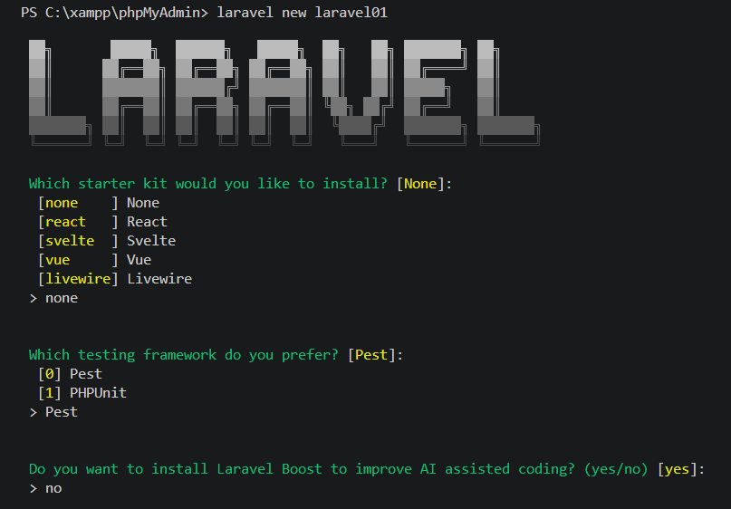
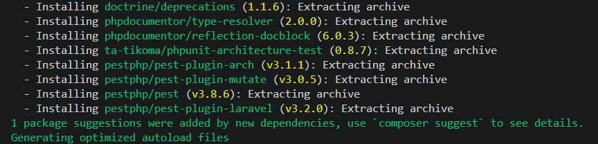
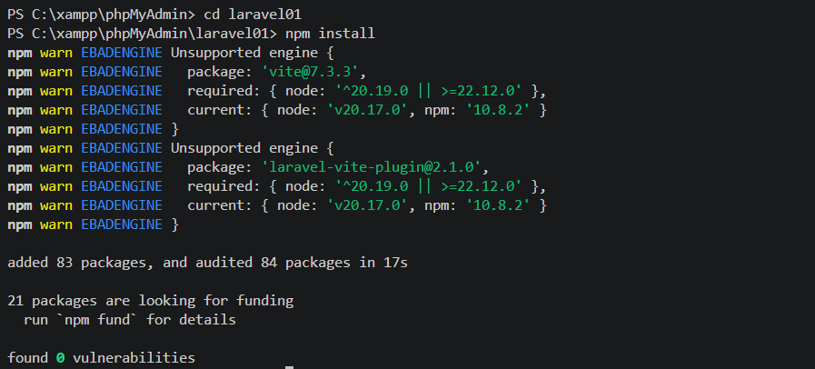
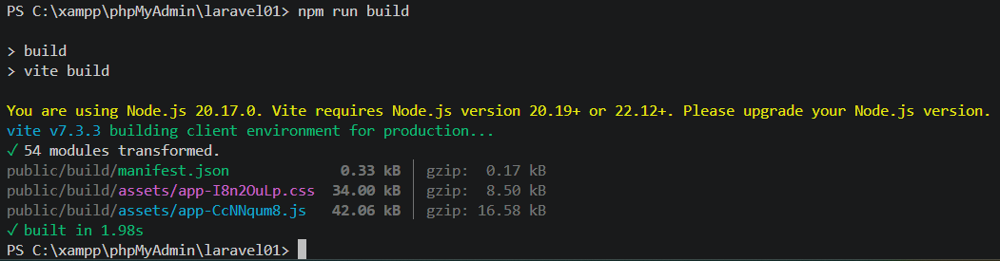
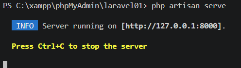
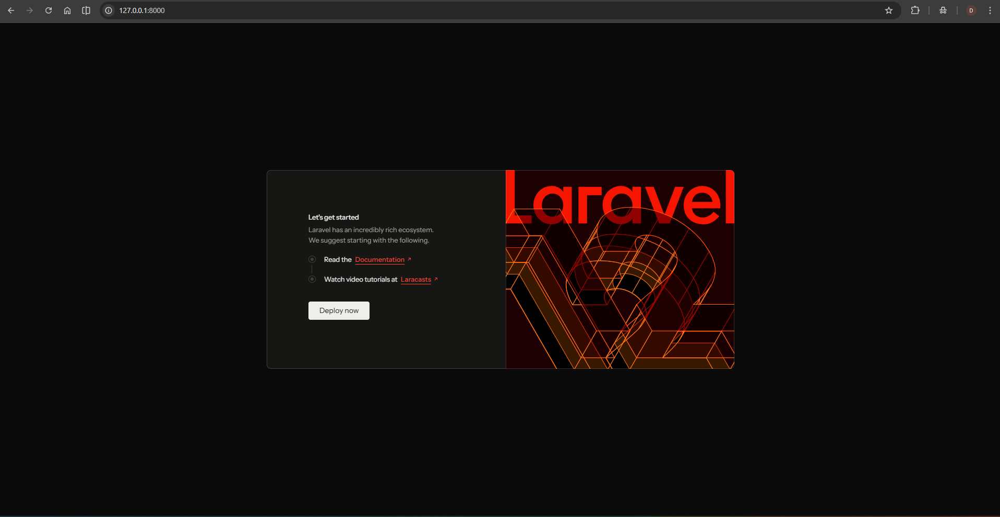
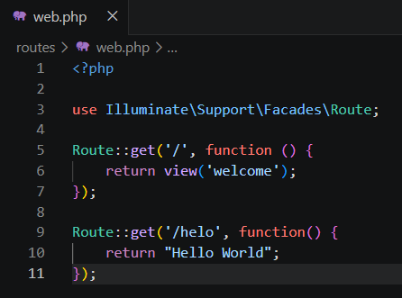
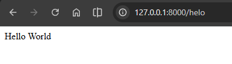
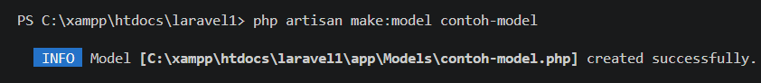
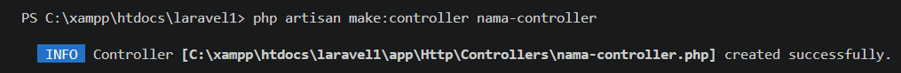

Laporan Praktikum: Instalasi Framework Laravel
Mata Kuliah: Pemrograman Web • Universitas Andalas
Pendahuluan
Praktikum ini bertujuan untuk memberikan pemahaman mendalam mengenai proses instalasi dan konfigurasi awal Framework Laravel sebagai salah satu framework PHP paling populer saat ini. Dalam pengembangan web modern, efisiensi dan struktur kode menjadi prioritas utama, di mana Laravel menawarkan arsitektur Model-View-Controller (MVC) yang memudahkan pengembang dalam mengelola logika aplikasi secara sistematis.
Fokus utama dari modul praktikum ini mencakup penyiapan lingkungan pengembangan lokal menggunakan XAMPP sebagai web server, serta penggunaan Composer sebagai dependency manager untuk mengelola pustaka PHP yang dibutuhkan. Selain aspek backend, praktikum ini juga menyentuh integrasi alat bantu frontend modern seperti Vite untuk optimasi aset aplikasi.
Melalui serangkaian langkah yang telah dilakukan, praktikan diharapkan mampu membangun pondasi aplikasi web yang kokoh, memahami alur kerja routing, serta mampu mengimplementasikan komponen dasar MVC untuk menciptakan aplikasi yang dinamis dan terstruktur.
1. Instalasi XAMPP
Langkah pertama adalah mengunduh XAMPP melalui situs resmi Apache Friends. XAMPP berfungsi untuk menginstal web server Apache, PHP, dan MySQL secara otomatis. Setelah berhasil diinstal, folder htdocs akan muncul secara default pada C:\xampp\htdocs yang nantinya digunakan untuk menyimpan project Laravel.
2. Instalasi Composer
Composer merupakan package manager untuk PHP yang digunakan untuk menambahkan package-package yang dibutuhkan pada saat development. Download pada situs resmi dan install sesuai wizard. Setelah terpasang, kita bisa menggunakan perintah composer di terminal untuk mengelola dependensi proyek.
3. Laravel Installer & Pembuatan Project
Setelah Composer siap, langkah berikutnya adalah mengunduh installer Laravel secara global dengan perintah composer global require laravel/installer. Kemudian, kita dapat membuat project baru dengan perintah:
laravel new laravel01Pada gambar di bawah, terlihat proses inisialisasi project di mana kita memilih konfigurasi seperti Starter Kit (None), Testing Framework (Pest), dan inisialisasi Git.

Selanjutnya, Composer akan otomatis mengunduh seluruh dependensi framework yang diperlukan untuk memastikan lingkungan pengembangan siap digunakan:

Setelah folder project terbentuk, masuk ke direktori tersebut dan jalankan npm install untuk menyiapkan library frontend (Vite), diikuti dengan npm run build untuk kompilasi aset agar tampilan lebih optimal.


Terakhir, jalankan server dengan perintah php artisan serve. Jika proses berjalan lancar, tampilan welcome page Laravel akan muncul di browser Anda sebagai verifikasi bahwa instalasi telah sukses.


Routing pada Laravel dikelola di dalam file routes/web.php. Pada tahap ini, kita menambahkan rute baru menggunakan metode Route::get(). Rute /helo dikonfigurasi untuk mengembalikan teks string langsung ke browser.

Verifikasi dilakukan dengan mengakses URL http://127.0.0.1:8000/helo. Browser berhasil menampilkan teks "Hello World" sesuai dengan logika yang kita definisikan.

Gunakan perintah Artisan make untuk mempercepat pembangunan struktur aplikasi. Model digunakan untuk interaksi database, sedangkan Controller menangani logika aplikasi.
Membuat Model:
php artisan make:model contoh-model
Membuat Controller:
php artisan make:controller nama-controller